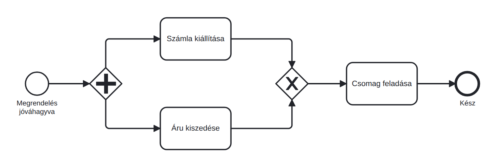
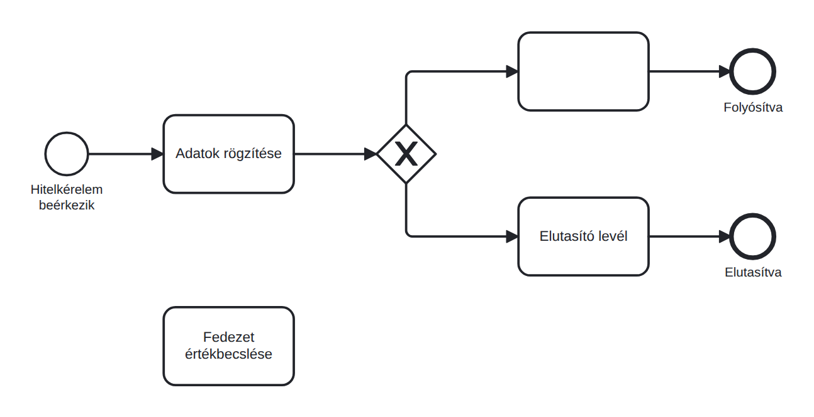
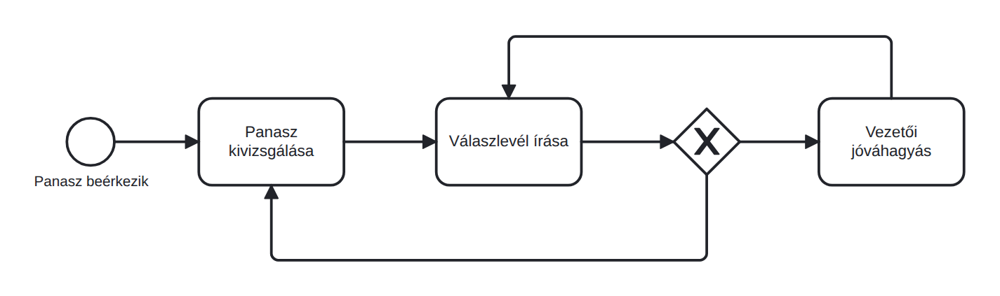

Hibakeresés: ismerd fel és javítsd a modellezési hibákat
- három hibás BPMN-modellben azonosítottad és kijavítottad a leggyakoribb modellezési hibákat;;
- rendelkezel egy nyolcpontos ellenőrzőlistával, amellyel bármely BPMN-modellt szisztematikusan át tudod vizsgálni;
- tudni fogod, mire számíts az ötödik napi beadandóban.
Találd meg a hibát
- Először csak nézd meg figyelmesen a folyamatábrákat, és gondold végig, mit találsz furcsának.
- Utána nyisd meg az állományokat, javítsd, és mentsd el hibas_X_javitva.bpmn néven.
- Ellenőrizd a javított modelleket az alábbi önellenőrző listával (zöld rész), majd vesd össze az Önellenőrzés a hibakeresés után részben felsorolt pontokkal.
Mindhárom modell elérhető a docs mappában; nyisd meg őket bpmn.io-ban és javítsd a hibát.



- Van kezdő esemény, és el van nevezve.
- Van legalább egy záró esemény, és minden záró esemény el van nevezve.
- Nincs elszigetelt elem: a kezdő esemény kivételével minden elemhez érkezik kapcsolat, a záró esemény kivételével pedig minden elemből továbbhalad a folyamat.
- Minden tevékenység neve igével fejezi ki az elvégzendő műveletet.
- Minden elágazó XOR-kapun egyértelmű döntési kérdés szerepel.
- Az XOR-kapu minden kimenő ága fel van címkézve, például igen/nem vagy a megfelelő konkrét cimkével.
- A párhuzamosan megnyitott AND-ágak AND-kapuval vannak összezárva.
- Az AND-kapu ágait nem címkézzük, mert itt nincs döntés: minden ág végrehajtódik.
Önellenőrzés a hibakeresés után
Első modell: az AND-elágazást XOR-összekapcsolás követi, ami helytelen. A párhuzamos ágakat AND-kapuval kell összevezetni.
Második modell: hiányzik a döntési kérdés, a kimenő ágak címkézése, valamint az egyik tevékenység neve. Az Értékbecslés különálló, a folyamathoz nem kapcsolódó elem.
Harmadik modell: nincs záró esemény, és a visszacsatolásból sincs egyértelmű kilépési út.
Mi vár rád az ötödik napon (1. beadandó)
Az ötödik nap online munkanap: egy vállalati esetleírást kapsz saját paraméterekkel. Folyamatmodellt készítesz, BIMP-ben szimulálsz, összehasonlítod a fejlesztési lehetőségeket, és üzleti javaslatot írsz. A pontos beadási fájlokat az ötödik nap útmutatója sorolja fel. A határidőre beadott munka igazolja a részvételt; a mai tananyagot és AI-eszközöket is használhatod.